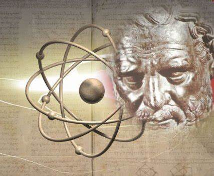
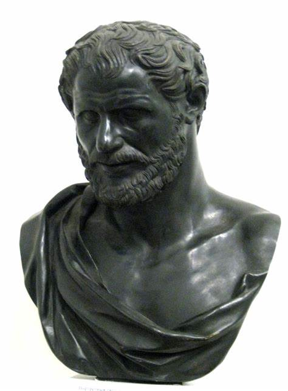

Atomistas
Junto a la materia, los mecanicistas conciben un motor del cambio. Se da este nombre al grupo de filósofos presocráticos que pretenden explicar la diversidad de cosas existentes con base en el movimiento de elementos, es decir, conciben la realidad, y todo lo que hay en ella, como un sistema de cuerpos en movimiento.
Empédocles
Constituye un intento de conciliación entre lo que nos dicen nuestros sentidos: hay múltiples cosas en constante movimiento, y las tesis de Parménides acerca del Ser. El ente de Parménides es una esfera homogénea que no cambia. Para Empédocles la realidad también es una esfera, pero no homogénea, sino una mezcla de elementos.
Cuatro raíces del todo:
Existen cuatro elementos o raíces del todo: Agua, aire, fuego y tierra. Estas raíces son indestructibles, existen desde siempre y para siempre; son eternas. Todo cuanto hay en el universo se ha formado a partir de la combinación de estas cuatro sustancias elementales, y como las proporciones en que pueden combinarse los elementos son múltiples, también los resultados posibles de tales mezclas son múltiples. Por eso la diversidad de cosas en el mundo. Para Empédocles las cosas no nacen ni mueren, lo que verdaderamente ocurre es una mezcla y separación de estos cuatro elementos, un cambio de lugar de las partículas elementales. «No se da nacimiento de ninguna de las cosas, ni un acabarse en la muerte; sino sólo mezcla y cambio-separarse de las cosas mezcladas». (Frag. 8)
Principios del movimiento: amor y odio
Empédocles es el primer filósofo que propone la existencia de fuerzas (motores) que actúan sobre la materia -raíces-, instándola a que se unan o se separen, es decir, a que se mueva. Estas fuerzas, motor de los cambios, son el amor y el odio. El amor es la fuerza que junta unos elementos con otros para producir criaturas compuestas; y el odio tiende a separar los distintos elementos. Ambas fuerzas permanecen siempre activas, pero su predominio es alternativo. Según Empédocles, la evolución del mundo es un proceso circular que se desarrolla en cuatro periodos:
- Reinado del amor. Las partículas de todos los elementos están completamente mezcladas, a tal grado que no es posible distinguir las raíces.
- El odio comienza a actuar y va logrando la separación de los distintos elementos; en este periodo aún quedan elementos distintos sin separar.
- Dominio del odio. Los elementos distintos se han separado. En este periodo no existen las cosas que conocemos.
- El amor reinicia su acción, logrando comenzar a combinar los elementos distintos entre sí, cerrándose así un ciclo, para volver a repetirse interminablemente.
Demócrito
Todo está constituido por átomos
Para Demócrito los elementos últimos constituyentes del mundo son los átomos; éstos son partículas materiales pequeñísimas en incesante movimiento que no se pueden percibir por los sentidos; son indivisibles, no-generados, eternos y en número infinito. Son idénticos sustancialmente hablando.
Se distinguen entre sí por su tamaño y forma; unos son redondos, otros angulosos, otros tienen forma de hoz, de ganchos, triangulares, etcétera.
Estas características -que distinguen a unos átomos de otros- y a las distintas posiciones, combinaciones y distancias que guardan entre sí se debe a la diversidad de las cosas que hay en el mundo.
El vacío: principio del movimiento
El vacío es un intermedio entre la realidad plena de los átomos y el absoluto no-ser de Parménides. El concepto de «vacío» es importantísimo en la teoría de Demócrito, porque permite explicar la pluralidad y el movimiento de los átomos, y esto a su vez explica toda la realidad.
Conocimiento
El conocimiento ocurre porque las cosas emiten copias de sí mismas, muy sutiles, formadas por átomos pequeñísimos que penetran en los órganos de los sentidos, y cuando la mente recibe una copia de los objetos, se da el conocimiento.
Anaxágoras
Hay de todo en todo
Al igual que Empédocles y los atomistas, acepta de Parménides que nada puede generarse de la nada y que ninguna cosa puede convertirse en nada. Para Anaxágoras todo existe desde siempre.
Estas partículas diminutas son increadas, eternas y cualitativamente inmutables, como el ser de Parménides; pero a diferencia de este son en número infinitas.
Anaxágoras afirma que las cosas están compuestas por partículas pequeñísimas que contienen en sí partes de todo lo demás. Es decir, que en todos los seres hay partículas de todas las sustancias que hay en el universo. A estas partículas pequeñísimas Anaxágoras las llamó Spermata, semillas. Estas partículas diminutas no sólo son infinitas en número, sino que están formadas, a su vez, de un número infinito de porciones pequeñísimas.
Principio del movimiento: el nous
Anaxágoras postula un principio de movimiento en la materia. Para este filósofo el responsable de la puesta en marcha de los spermata es el nous. El nous da inicio al proceso de transformación de la materia. Antes de que se originara el mundo, todos los elementos, las semillas, formaban una mezcla; en esta mezcla originaria ocurrió un movimiento circular gracias a un impulso dado por el nous: este impulso, que se originó en un punto determinado, fue ampliándose indefinidamente hasta formar el cosmos.
El conocimiento
Su idea de la percepción es contraria a la de Empédocles, pues para Anaxágoras las cosas se conocen por sus contrarios. Así, por ejemplo, no percibimos que algo está frío si nuestra mano está fría, pero si nuestra mano está caliente, entonces lo percibimos perfectamente.